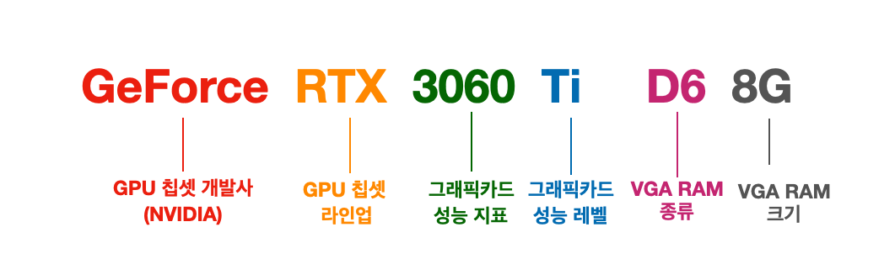

부품 고르는 법 - 부품 별 선택방법
Nvidia
 NVIDIA 그래픽카드는 뛰어난 성능과 안정성으로 많은 사용자에게 사랑받고 있습니다. 특히 고해상도 게임이나 그래픽 작업에서 강력한 성능을 발휘하며, 인공지능 기술을 활용해 게임 화면을 더 부드럽고 선명하게 만들어줍니다. 또한 주요 영상 편집 프로그램이나 3D 소프트웨어와 잘 호환되어 크리에이터들이 많이 선호합니다. 최신 영상 출력 규격도 지원해 최신 모니터와의 연결에도 문제가 없고, 정기적인 드라이버 업데이트 덕분에 안정적인 사용이 가능합니다. 하지만 가격이 비교적 높은 편이고, 전력 소비가 많아 전기 요금이나 발열 관리에 신경 써야 합니다. 제품 종류가 많아 어떤 모델을 선택할지 고민이 될 수 있으며, 인공지능 기술은 모든 게임에서 효과를 체감하기 어려울 때도 있습니다. 최근에는 일부 사용자들이 최신 드라이버 업데이트 후 그래픽 성능 저하나 호환성 문제, 특정 게임에서의 버그 현상을 보고하는 경우가 있어 주기적인 드라이버 관리가 필요하다는 점도 단점으로 꼽힙니다. 이런 점들을 고려하면, 최고 성능과 안정성을 원한다면 좋은 선택이지만, 예산이나 전력 효율, 드라이버 호환성 문제도 함께 생각해야 합니다.
NVIDIA 그래픽카드는 뛰어난 성능과 안정성으로 많은 사용자에게 사랑받고 있습니다. 특히 고해상도 게임이나 그래픽 작업에서 강력한 성능을 발휘하며, 인공지능 기술을 활용해 게임 화면을 더 부드럽고 선명하게 만들어줍니다. 또한 주요 영상 편집 프로그램이나 3D 소프트웨어와 잘 호환되어 크리에이터들이 많이 선호합니다. 최신 영상 출력 규격도 지원해 최신 모니터와의 연결에도 문제가 없고, 정기적인 드라이버 업데이트 덕분에 안정적인 사용이 가능합니다. 하지만 가격이 비교적 높은 편이고, 전력 소비가 많아 전기 요금이나 발열 관리에 신경 써야 합니다. 제품 종류가 많아 어떤 모델을 선택할지 고민이 될 수 있으며, 인공지능 기술은 모든 게임에서 효과를 체감하기 어려울 때도 있습니다. 최근에는 일부 사용자들이 최신 드라이버 업데이트 후 그래픽 성능 저하나 호환성 문제, 특정 게임에서의 버그 현상을 보고하는 경우가 있어 주기적인 드라이버 관리가 필요하다는 점도 단점으로 꼽힙니다. 이런 점들을 고려하면, 최고 성능과 안정성을 원한다면 좋은 선택이지만, 예산이나 전력 효율, 드라이버 호환성 문제도 함께 생각해야 합니다.
NVIDIA 그래픽카드의 세대 구분은 주로 모델명에 포함된 숫자를 통해 이루어집니다. 앞자리 숫자가 그래픽카드의 세대를 나타내며, 세대가 높아질수록 성능과 기술이 발전하는 구조입니다. 모델명 뒤의 세 자리 숫자는 성능 등급을 의미하며, 숫자가 높을수록 고성능 모델임을 알 수 있습니다. 예를 들어, RTX 3060보다 RTX 3080, RTX 3090이 더 높은 성능을 제공합니다. 또한 ‘Ti’ 접미사는 기본 모델보다 성능이 약간 향상된 버전을 뜻하며, ‘Super’는 과거 세대에서 비슷한 의미로 사용되었습니다. 노트북용 모델에는 ‘XM’, ‘XC’와 같은 접미사가 붙어 구분되기도 합니다. 이러한 명명법을 통해 사용자는 자신의 필요에 맞는 세대와 성능을 쉽게 파악할 수 있습니다..
| 접미사 | 의미 |
|---|---|
| Ti | 기본 모델보다 약간 높은 성능 |
| Super | Ti와 비슷하게 중간 성능 향상 모델 |